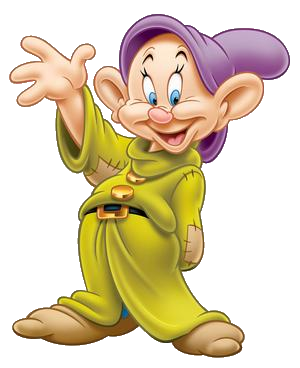

This loveable, slightly-balmy, child-like fellow gets a great kick out of life. Imbued with a sense of fun, he is a bit like Harpo-Marx, in that Dopey doesn't speak, but his sly grin seems to 'tell all.Dopey's garments are at least 5 sizes too big for him, but that only adds to his charm. Somewhat mischievous, Dopey somehow manages to capture the hearts of everyone.